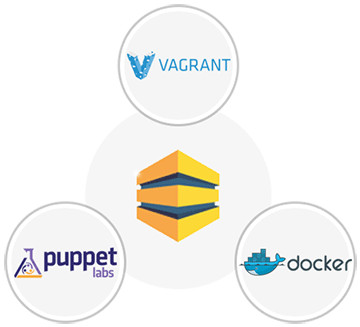

Development Environments simplified
Boxupp is an interface simplifying creation of Virtual Machines and Containers using powerful tools like Vagrant, Puppet and Docker.
- Boxupp code is now available on Github. Take a fork
- Very soon you will be able to manage your AWS environments.
Why Boxupp
Our motivation to develop this tool is to provide an unified interface to the developers to efficiently manage their development environments and focus on coding instead of putting infrastructures in place. Therefore, we have brought together tools like Vagrant, Puppet and Docker under one roof. Initially we started with VirtualBox for creating and provisioning infrastructure locally and are now focussing on supporting other platforms like Amazon Cloud and Google Compute.

Lets Take A Quick Overview
Create And Manage Multiple Workspaces
Create And Manage Multiple Workspaces
Super easy to create workspaces using providers viz. Docker and Virtualbox Navigate effortlessly from one workspace to other, Define Boxes, Modules, Scripts etc within in your workspaces and much more. To know More Book a Live Demo >


Latest Blog Posts
Latest Tweets
Latest Blog
Pitfalls Incurring During Transition from Development to Deployment
Posted on 11 dec 2014 by Gurjant Singh
The real challenge of today’s project development life-cycle lies in shipping of the project builds from development environments to production.
DevOps - Technical and Business Benefits
Posted on 11 dec 2014 by Pankaj Arora
Since the dawn of the software industry, it won’t be an understatement, that it has been majorly dependent on two teams “The Dev Team” and “The Ops Team” Though both the teams used to work on the same product.
Devops - An Ingredient for survival of legacy IT organizations
Posted on 11 dec 2014 by Pankaj Arora
As we all know in today’s fast paced environment, the software applications, products etc. are cranked at the rate of knots.
Subscribe to our mailing list
Elementum sem parturient nulla quam placerat viverra mauris non cum elit tempus ullamcorper dolor.